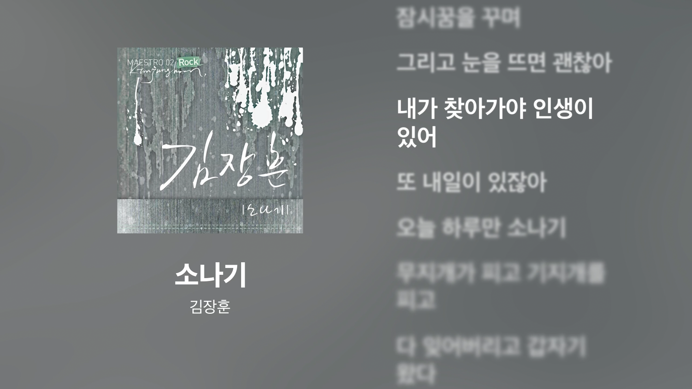

2023

Unity
HDRP
Blender
Art
Technology
Work In Progress
The Way : 3D Interactive Art
3D Modeling, Unity Engine 활용 등을 연습하기 위한 프로젝트입니다. 완성이 아닌 초기 단계입니다. 지식융합미디어입문 강의 중 김상용 교수님의 이야기를 듣고 느낌 점을
바탕으로 어떤 의미와 스토리를 담은 3D Interactive Art를 만들고자 하였습니다.

Blender
Art
Allos
서강대학교 캐릭터 '알로스'의 3D 모델입니다.

Javascript
ExtendScript
Technology
Art
APMS Lyrics: An After Effects Plugin
노래 가사가 부드럽게 따라오는 Lyric Video를 쉽게 만들기 위한 After Effects 플러그인입니다.
And...
This web page
Hosted on AWS
View Source